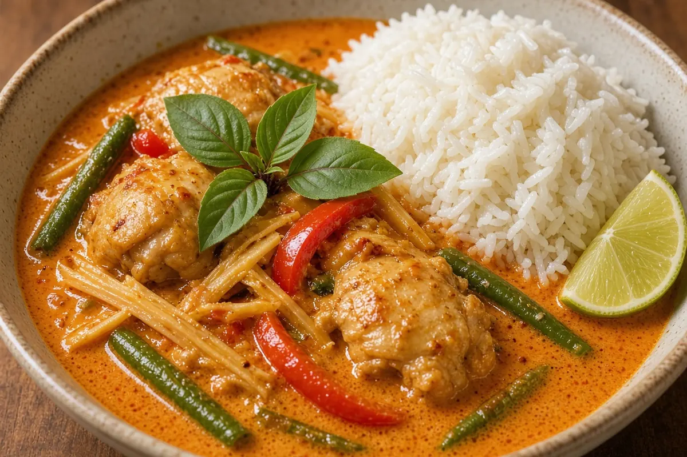

Thai Red Curry Chicken over Jasmine Rice
Boneless chicken thighs simmered in full-fat coconut milk and red curry paste with bell peppers and green beans, finished with lime and basil over jasmine rice. A double batch, so Friday is leftovers.

8 servings
By
Yield: 8 servings
Prep:
Cook:
Total:
Difficulty: Easy
Ingredients
- 3 lb boneless skinless chicken thighs, cut into bite-size pieces
- 3 cups jasmine rice
- 4 1/2 cups water
- 2 Tbsp coconut oil
- 1 large onion, sliced
- 2 red bell peppers, sliced
- 12 oz green beans, trimmed and halved
- 4 cloves garlic, minced
- 1 Tbsp fresh ginger, grated
- 1/2 cup red curry paste
- 3 (13.5 oz) cans full-fat coconut milk
- 1 cup chicken bone broth
- 3 Tbsp fish sauce
- 2 Tbsp brown sugar
- 2 limes, juiced
- 1 cup fresh basil leaves
Instructions
- Rinse the jasmine rice and combine it with the water in a large saucepan. Bring to a boil, cover, and simmer on low 15 minutes, then rest off the heat, covered, 10 minutes.
- While the rice cooks, heat the coconut oil in a large heavy pot over medium-high heat. Cook the onion 3 minutes, then add the garlic, ginger, and red curry paste and fry, stirring, 2 minutes until fragrant.
- Add the chicken thighs and stir to coat, 3 minutes. Pour in the coconut milk and chicken bone broth and bring to a simmer.
- Simmer 10 minutes, then add the red bell peppers and green beans and simmer 5 minutes more, until the chicken is cooked through and the vegetables are crisp-tender.
- Stir in the fish sauce, brown sugar, and lime juice, then the basil. Taste and add more fish sauce or lime. Serve over the jasmine rice.
Notes: This is a double batch: save half for Friday's leftovers. The curry reheats beautifully on the stove; make fresh jasmine rice Friday since day-old rice dries out. Curry paste brands vary in heat, so start with 1/3 cup if yours is spicy.